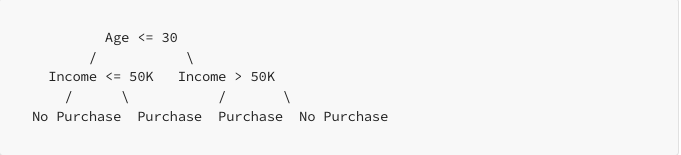
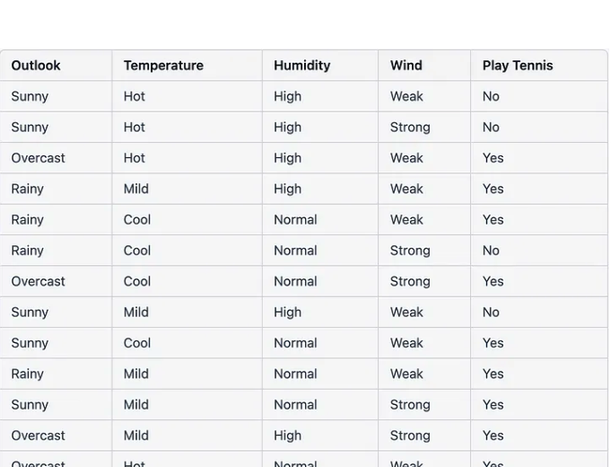
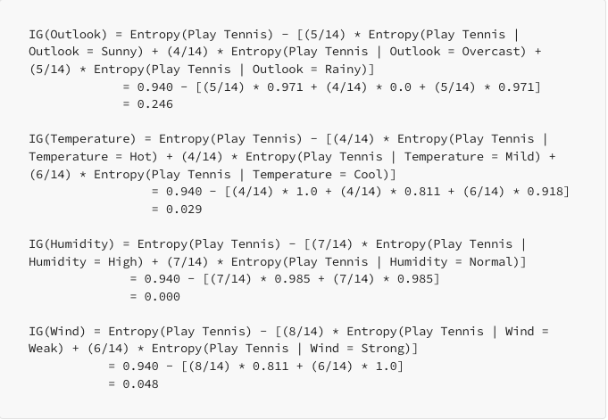
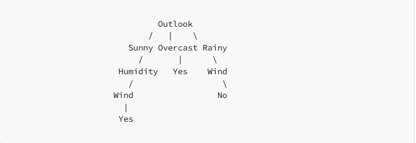

Decision Trees — A Simple Way
A Decision Tree is made up of nodes and edges. Each node represents a decision or a test on a feature, and each edge represents the outcome of the test. The topmost node in the tree is the root node, and the bottom nodes are the leaf nodes.
Here's an example of a Decision Tree for a binary classification task, where we want to predict whether a person is likely to buy a product based on their age and income:

In this example, the root node represents the first decision, which is whether the person's age is less than or equal to 30. If the answer is yes, we move down the left branch to the next decision, which is whether the person's income is less than or equal to 50K. If the answer is no, we move down the right branch to the next decision, which is whether the person's income is greater than 50K.
At each node, we make a binary decision based on the value of a feature. This continues until we reach a leaf node, which represents the final decision. In this case, the leaf nodes represent whether the person is likely to purchase the product or not.
Why do we need Decision Trees?
There are several reasons to use Decision Trees in machine learning:
1. Easy to interpret and visualize
Decision Trees are easy to interpret and visualize, making them a popular choice for data analysis and decision-making tasks. The tree structure is intuitive and allows for an easy understanding of the decision-making process.
2. Can handle both categorical and numerical data
Decision Trees can handle both categorical and numerical data, making them versatile for a wide range of applications.
3. Non-parametric
Decision Trees are non-parametric, meaning they do not make assumptions about the underlying distribution of the data. This makes them useful when the data is not normally distributed or when there are outliers.
4. Can handle missing values
Decision Trees can handle missing values in the data, making them useful when dealing with incomplete datasets.
5. Efficient
Decision Trees are relatively efficient and can handle large datasets quickly. They are also scalable and can be used for both small and large datasets.
6. Can be used for both classification and regression
Decision Trees can be used for both classification and regression tasks, making them a versatile algorithm for a wide range of machine-learning problems.
7. Can handle interactions between features
Decision Trees can capture interactions between features, making them useful when there are complex relationships between the input variables.
Sample Data to Create a Decision Tree
Consider the following sample dataset that represents whether or not to play tennis based on different features:

Step 1: Calculate the entropy of the target variable (Play Tennis)
Entropy in physics is simply a metric for measuring the degree of disorder or randomness of a system.
- The number of positive examples (Play Tennis = Yes) is 9, and the number of negative examples (Play Tennis = No) is 5.
- The total number of examples is 14.
- The entropy of the target variable is:
Entropy(Play Tennis) = - (9/14) * log2(9/14) - (5/14) * log2(5/14) = 0.940
Step 2: Calculate the Information Gain for each feature
Information gain is a metric that helps us determine which attribute in a given set of training feature vectors is most useful for discriminating between target classes. We use it to decide the ordering of attributes in the nodes of the Decision Tree.
We calculate the Information Gain for each feature by subtracting the weighted average of the entropies of the target variable for each value of the feature from the entropy of the target variable.

Based on these calculations, we can see that the Outlook feature has the highest IG, followed by Wind, Temperature, and Humidity. Therefore, Outlook would be the best feature to split the dataset on first when creating a decision tree.
Decision Tree
Based on the Information Gain calculations, we can create a decision tree as follows:

Here, the first split is on the Outlook feature, since it has the highest IG. If the Outlook is Sunny, we check the Humidity feature next, and if the Humidity is High, we predict No, otherwise Yes. If the Outlook is Overcast, we predict Yes. If the Outlook is Rainy, we check the Wind feature next, and if the Wind is Weak, we predict Yes, otherwise No.
This is a general example and could not be the best decision tree, a best decision tree may vary with a real given dataset.